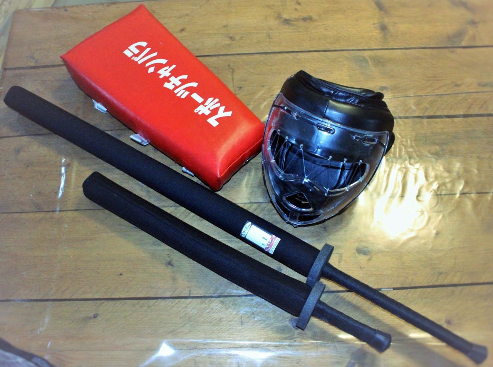

Bienvenue au Kobukan Kendojo
Club de Chanbara et de Kendo à Elbeuf

Qui sommes-nous ?
Depuis 1993, le Kobukan Kendojo transmet avec passion et rigueur les arts martiaux issus de la voie du sabre. Véritable lieu d’apprentissage et de partage, le dojo met en avant des disciplines qui allient tradition, respect et maîtrise de soi en garantissant un enseignement de qualité et fidèle aux valeurs martiales. Nous sommes fiers d’accueillir à Elbeuf près de Rouen, le seul Dojo de Chanbara de Normandie, une discipline à la fois ludique, sportive et formatrice, accessible à tous. Cette section fait partie du CORE. Que vous soyez débutant à la recherche d’une nouvelle pratique ou pratiquant confirmé souhaitant approfondir votre maîtrise, le Kobukan Kendojo est un espace où chacun peut progresser à son rythme, dans un esprit de respect et de convivialité.
Le Chanbara
Le Chanbara est un art martial moderne et dynamique, directement inspiré des combats de samouraïs. Son nom vient d’une onomatopée japonaise qui évoque le bruit des sabres qui s’entrechoquent. Pratiqué avec des armes adaptées et sécurisées, le Chanbara permet à chacun de découvrir l’esprit du combat traditionnel dans un cadre ludique et respectueux. Les participants s’affrontent à armes égales, équipés d’un kimono blanc à manches courtes, d’un tee-shirt uni à manches longues, d’un pantalon blanc, de gants et d’un casque de protection. Accessible dès l’âge de 6 ans, le Chanbara développe la vitesse, la concentration, la maîtrise de soi et le respect de l’adversaire. C’est une discipline à la fois formatrice et conviviale, qui offre à chacun enfants, adolescents ou adultes la possibilité de progresser tout en s’amusant. Bien plus qu’un simple sport de combat, le Chanbara est une véritable école de vie, héritée de la tradition des samouraïs, adaptée à notre époque et ouverte à tous.
Le Kendo
Le Kendo, littéralement « la voie du sabre », est l’un des arts martiaux japonais les plus anciens. Héritier des traditions guerrières des samouraïs, il prend la forme d’une escrime au sabre à deux mains, pratiquée avec une arme en bambou appelée shinai.
Les kendokas portent une tenue traditionnelle de couleur indigo ainsi qu’une armure protectrice composée d’un casque (men), d’une protection pour le buste (dō), la taille (tare) et les avant-bras (kote).
Le Kendo permet de développer la force de caractère, la rigueur, la concentration et la détermination, tout en cultivant le respect et l’humilité propres aux arts martiaux.
À propos de la section Kendo :
Actuellement, la section Kendo de notre dojo n’est pas encore ré-ouverte. Nous sommes à la recherche d’un enseignant qualifié capable d’encadrer les cours et de partager sa passion avec nos futurs pratiquants.
Notre objectif est de proposer prochainement un enseignement de qualité, fidèle aux valeurs et aux traditions de cette discipline prestigieuse.
Tarifs
Cotisation annuelle :
Enfants /Ados (6-18 ans) : 105 €
Etudiants majeurs (sur justificatif) : 120 €
Adultes : 140 €
(Dont licence FFDJA obligatoire, 56 € assurance incluse)
Famille : -20€ /an à partir de la 2ème licence
Eligible Atouts Normandie / Pass'Sport / Passeport Jeunes 76 / Coupons Sport ANCV
Chèque libellé à l’ordre du Kobukan Kendojo Elbeuf
3 premiers cours d’essai offerts
Fournir un certificat médical d’aptitude
Horaires
Les entraînements ont lieu le mercredi :
17h30 – 19h00 : Enfants
19h00 – 20h45 : Ados (13+) et adultes
Nos Senseis
Benjamin Desenclos :
6ème DAN
Diplômé du CFEB (Certificat Fédéral Enseignement Bénévole)
2 fois champion d'Europe toutes catégories en 2005 et 2010
Champion du monde en 2005
Clément Heurtevent :
2ème DAN
Diplômé du CFEB (Certificat Fédéral Enseignement Bénévole)
Le matériel
Galerie photos
.jpg)
Nous découvrir en vidéo
Nous trouver
Gymanase de l'Ecole Michelet
16 Rue Jean Gaument, 76500 Elbeuf
Nous contacter
Président du club (Guillaume) :
kobukan.kendojo@gmail.com
06.38.13.78.72
Prôle communication (Arlen) :
kobukankendojo.communication@gmail.com